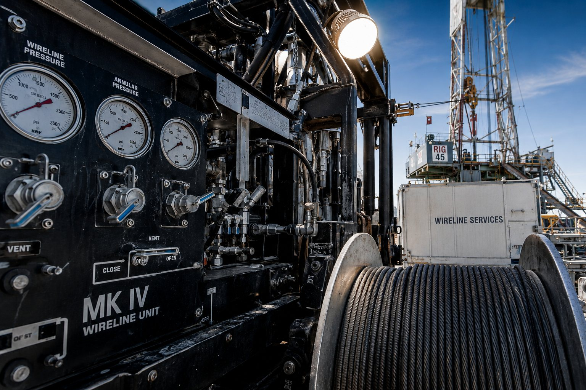
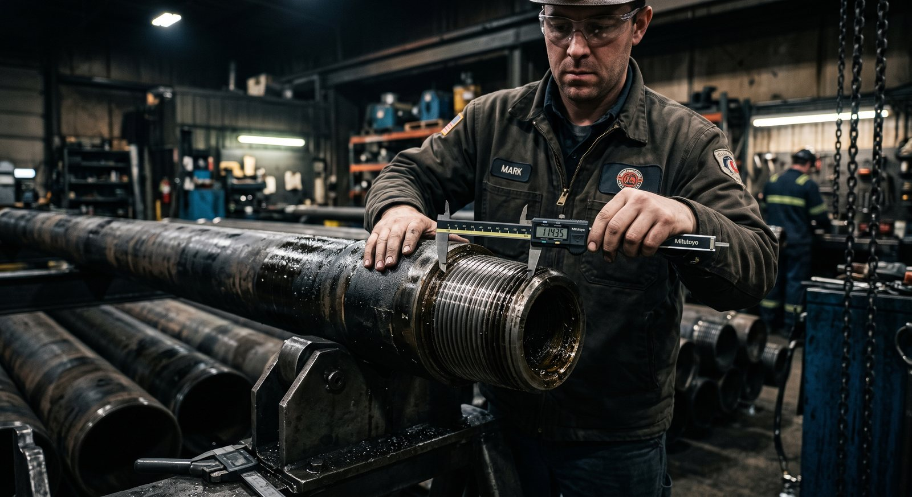
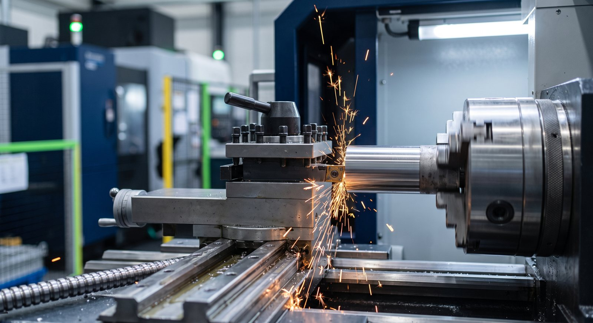
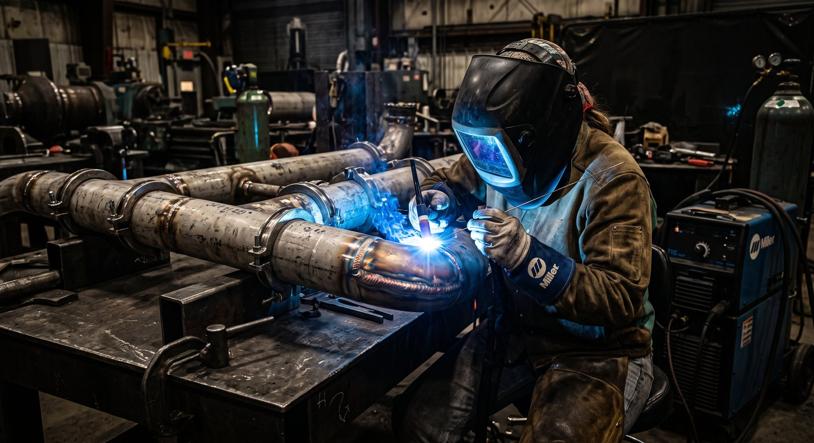

Inicio / Blog
Blog
Artículos educativos sobre wireline, slickline, control de presión, normas API/ISO y buenas prácticas de la industria.

Sector PetroleroPortadaDescubre el rol esencial de las operaciones con guaya en el mantenimiento, registro y completamiento de pozos petroleros, así como los estándares de seguridad requeridos.
 Sector PetroleroPortada
Sector PetroleroPortadaGuía técnica sobre la barrera primaria de presión durante intervenciones con guaya: función de lubricadores, válvulas BOP y criterios de mantenimiento.

Normativa y CalidadPortadaEntiende cómo cada especificación regula desde las conexiones de perforación hasta las cabezas de pozo y los tubulares de revestimiento.

Sector IndustrialPortadaDescubre cómo transformamos especificaciones y planos CAD en componentes mecanizados de alta precisión con simulación previa e ingeniería de detalle.

Sector IndustrialPortadaConoce la importancia de ejecutar soldaduras bajo procedimientos respaldados por calificación WPS/PQR en la fabricación de estructuras y recipientes a presión.
 Normativa y CalidadPortada
Normativa y CalidadPortadaDescubre cómo la integración de Calidad, Medio Ambiente y Seguridad Industrial transforma la confiabilidad operacional de los proveedores del sector.